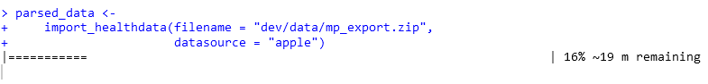

Importing Data
Apple Health data is stored in very large xml files which can be
exported as a zip file, but have tens of millions of rows (e.g. for many
data types, health data is logged and stored at the second level).
Therefore, the import_healthdata and
import_workouts functions take an exported zip file as
input and parse it into an R data format. Due to the very large amount
of rows, this can take up to several minutes, and should therefore be
done once per updated health file, which can subsequently be stored as
an rds or csv file.
Importing Health Data
First, we import, parse and save the an example dataset of health data. A dynamic progress bar tracks the progress of the parsing process.
library(health2R)
parsed_healthdata <-
import_healthdata(filename = "../dev/data/mp_export.zip",
datasource = "apple")
To get a first overview, we sample a random subset of 5 rows from the parsed data frame:
parsed_healthdata %>%
sample_n(5)
#> # A tibble: 5 × 9
#> type sourceName sourceVersion unit device startDate
#> <chr> <chr> <chr> <chr> <chr> <dttm>
#> 1 HKQuantityTypeIdent… Mariana ’… 9.1 count <<HKD… 2022-12-18 07:51:12
#> 2 HKQuantityTypeIdent… Mariana ’… 9.3.1 count <<HKD… 2023-05-05 23:23:32
#> 3 HKQuantityTypeIdent… Mariana ’… 10.0 coun… <<HKD… 2023-10-03 09:06:01
#> 4 HKQuantityTypeIdent… Mariana ’… 9.5.1 kcal <<HKD… 2023-06-20 16:07:06
#> 5 HKQuantityTypeIdent… Mariana ’… 9.6.1 kcal <<HKD… 2023-08-26 15:01:33
#> # ℹ 3 more variables: endDate <dttm>, creationDate <dttm>, value <chr>After the parsing is complete, we store the parsed file as an ´rds´ file:
saveRDS(parsed_healthdata,
"../dev/data/parsed_healthdata_mp.rds")Importing Workout Data
Similarly, the import_workouts function imports workouts
as a list of gpx data, where the name of the individual
list entries is the route name.
parsed_workouts <-
import_workouts(filename = "../dev/data/mp_export.zip",
datasource = "apple")
saveRDS(parsed_workouts,
"../dev/data/parsed_apple_workouts_mp.rds")
parsed_workouts[1:2] %>%
map(~ .x %>% head(5))
#> $`Route 2022-03-28 9:23pm`
#> # A tibble: 5 × 8
#> lat lon ele time speed course hAcc vAcc
#> <dbl> <dbl> <dbl> <dttm> <dbl> <dbl> <dbl> <dbl>
#> 1 10.5 -84.8 633. 2022-03-28 17:54:24 0.689 46.3 1.75 1.74
#> 2 10.5 -84.8 633. 2022-03-28 17:54:25 0.714 50.0 1.56 1.53
#> 3 10.5 -84.8 634. 2022-03-28 17:54:26 0.355 43.9 1.47 1.36
#> 4 10.5 -84.8 634. 2022-03-28 17:54:27 0.146 23.7 1.43 1.23
#> 5 10.5 -84.8 634. 2022-03-28 17:54:28 0.0933 354. 1.42 1.12
#>
#> $`Route 2022-03-29 10:40pm`
#> # A tibble: 5 × 8
#> lat lon ele time speed course hAcc vAcc
#> <dbl> <dbl> <dbl> <dttm> <dbl> <dbl> <dbl> <dbl>
#> 1 10.7 -85.0 691. 2022-03-29 19:27:52 0.693 222. 1.78 1.71
#> 2 10.7 -85.0 691. 2022-03-29 19:27:53 0.597 220. 1.46 1.41
#> 3 10.7 -85.0 691. 2022-03-29 19:27:54 0.715 217. 1.41 1.32
#> 4 10.7 -85.0 691. 2022-03-29 19:27:55 0.769 209. 1.35 1.18
#> 5 10.7 -85.0 691. 2022-03-29 19:27:56 0.718 200. 1.32 1.08Initial Exploration
After having once parsed and saved the data as rds
files, it can be read and further analysed.
parsed_healthdata <-
readRDS(file.path("PATH_TO_RDS/parsed_healthdata_mp.rds"))
parsed_workouts <-
readRDS(file.path("PATH_TO_RDS/parsed_apple_workouts_mp.rds"))The full parsed file contains a large number of different variables and data types, e.g. just the 15 most frequent ones in our example data set:
parsed_healthdata$type %>% table() %>% sort(decreasing = TRUE) %>% head(15)
#> .
#> HKQuantityTypeIdentifierActiveEnergyBurned
#> 557636
#> HKQuantityTypeIdentifierHeartRate
#> 292203
#> HKQuantityTypeIdentifierBasalEnergyBurned
#> 253537
#> HKQuantityTypeIdentifierDistanceWalkingRunning
#> 118161
#> HKQuantityTypeIdentifierDistanceCycling
#> 88443
#> HKQuantityTypeIdentifierStepCount
#> 67271
#> HKQuantityTypeIdentifierRespiratoryRate
#> 25203
#> HKQuantityTypeIdentifierWalkingSpeed
#> 24331
#> HKQuantityTypeIdentifierWalkingStepLength
#> 24330
#> HKCategoryTypeIdentifierSleepAnalysis
#> 23878
#> HKQuantityTypeIdentifierAppleExerciseTime
#> 22383
#> HKQuantityTypeIdentifierAppleStandTime
#> 22185
#> HKQuantityTypeIdentifierWalkingDoubleSupportPercentage
#> 21580
#> HKCategoryTypeIdentifierAppleStandHour
#> 12483
#> HKQuantityTypeIdentifierPhysicalEffort
#> 12198Specialized functions to pull and analyse certain specific variables
and data types can be found in the
vignette("02_analyse_health_data")